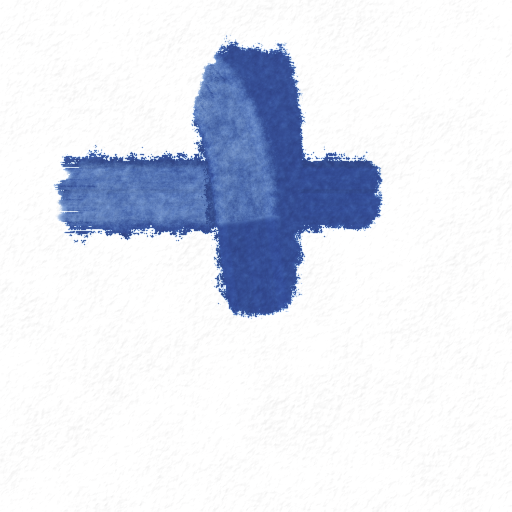
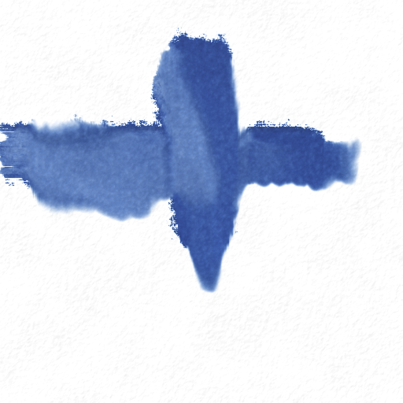
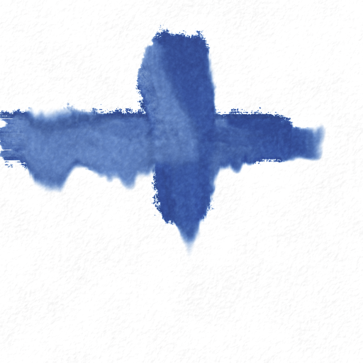
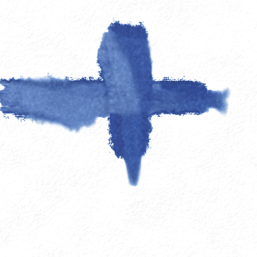
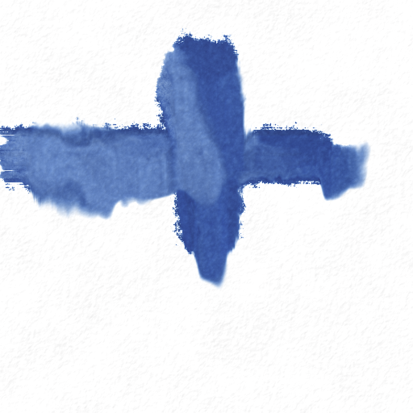

Scène croix avec trait horizontal ALLONGÉ (x 0.06 → 0.94), feuille 512², gravité 0.5, gain 0.08, eau pleine largeur ×1, 4 s. « Langue » = largeur du pied de la coulure ; « bottom » = point le plus bas de la peinture (doc uv, plus bas = descend plus).





| Gate | Bruit (amplitude @ échelle) | bottom (uv) | Coulure sous le trait | Largeur de langue | Eau restante |
|---|---|---|---|---|---|
| cross-dry (contrôle sans eau) | — | 0.3760 | 0 px | 0 | 206 |
| noise-n0 | 0 | 0.2744 | 52 px | 25 px | 3709 |
| noise-n05 | 0.5 @ 8 | 0.2783 | 50 px | 20 px | 4160 |
| noise-n08 | 0.8 @ 8 | 0.2822 | 48 px | 13 px | 4560 |
| noise-n10 | 1.0 @ 8 | 0.2959 | 41 px | 10 px | 4746 |
| noise-n10-s4 | 1.0 @ 4 | 0.2744 | 52 px | 22 px | 5544 |
| noise-n10-s16 | 1.0 @ 16 | 0.2998 | 39 px | 23 px | 5231 |
Le bruit est un pur fonction de la position (aucun temps, aucun RNG) : il est donc déterministe et re-bake-safe par construction. En espace document, il fixe des « voies » verticales : seules les zones chargées coulent, et l'eau est mieux conservée (3709 → 4746). Échelle 8 = des plaques de ~1/8 de feuille ; 4 = moins de plaques plus grosses ; 16 = grain fin mais coulure courte. L'eau étroite est abandonnée : elle affamait la coulure (bottom 0.32-0.34). Le filet fin vient maintenant du bruit, pas d'un apport d'eau réduit.